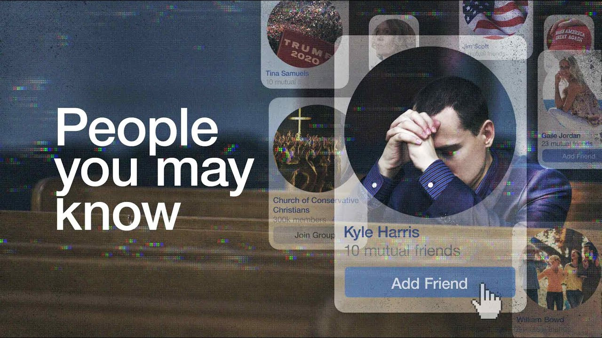

============================

Stats
Title: People.You.May.Know.2020.720p.WEB-DL-HDETG.mkv
Category: Documentaries
Type: Documentary
Language: English
Total size: 576.5 MB
Uploaded By: IMAM00
============================
Info:
!!! Remember I don't own or edit anything on links that might be on this torrent!!!

General
Unique ID : 240641619319710141076366273698454766837 (0xB509E3DA680655579801B6B2A4C704F5)
Complete name : People.You.May.Know.2020.720p.WEB-DL-HDETG.mkv
Format : Matroska
Format version : Version 4
File size : 577 MiB
Duration : 1 h 32 min
Overall bit rate : 875 kb/s
Encoded date : UTC 2020-12-21 11:12:59
Writing application : mkvmerge v7.9.0 ('Birds') 64bit
Writing library : libebml v1.3.1 + libmatroska v1.4.2
Video
ID : 1
Format : HEVC
Format/Info : High Efficiency Video Coding
Format profile : Main@L3.1@Main
Codec ID : V_MPEGH/ISO/HEVC
Duration : 1 h 32 min
Bit rate : 745 kb/s
Width : 1 280 pixels
Height : 720 pixels
Display aspect ratio : 16:9
Frame rate mode : Constant
Frame rate : 25.000 FPS
Color space : YUV
Chroma subsampling : 4:2:0
Bit depth : 8 bits
Bits/(Pixel*Frame) : 0.032
Stream size : 491 MiB (85%)
Title : HDETG
Writing library : x265 3.0_Au+4-dcbec33bfb0f:[Windows][GCC 8.2.1][64 bit] 8bit+10bit+12bit
Encoding settings : cpuid=1111039 / frame-threads=2 / numa-pools=4 / wpp / no-pmode / no-pme / no-psnr / no-ssim / log-level=2 / input-csp=1 / input-res=1280x720 / interlace=0 / total-frames=138176 / level-idc=0 / high-tier=1 / uhd-bd=0 / ref=3 / no-allow-non-conformance / no-repeat-headers / annexb / no-aud / no-hrd / info / hash=0 / no-temporal-layers / open-gop / min-keyint=25 / keyint=250 / gop-lookahead=0 / bframes=4 / b-adapt=2 / b-pyramid / bframe-bias=0 / rc-lookahead=20 / lookahead-slices=4 / scenecut=40 / radl=0 / no-splice / no-intra-refresh / ctu=64 / min-cu-size=8 / no-rect / no-amp / max-tu-size=32 / tu-inter-depth=1 / tu-intra-depth=1 / limit-tu=0 / rdoq-level=0 / dynamic-rd=0.00 / no-ssim-rd / signhide / no-tskip / nr-intra=0 / nr-inter=0 / no-constrained-intra / strong-intra-smoothing / max-merge=2 / limit-refs=3 / no-limit-modes / me=1 / subme=2 / merange=57 / temporal-mvp / weightp / no-weightb / no-analyze-src-pics / deblock=0:0 / sao / no-sao-non-deblock / rd=3 / no-early-skip / rskip / no-fast-intra / no-tskip-fast / no-cu-lossless / no-b-intra / no-splitrd-skip / rdpenalty=0 / psy-rd=2.00 / psy-rdoq=0.00 / no-rd-refine / no-lossless / cbqpoffs=0 / crqpoffs=0 / rc=abr / bitrate=750 / qcomp=0.60 / qpstep=4 / stats-write=0 / stats-read=0 / ipratio=1.40 / pbratio=1.30 / aq-mode=2 / aq-strength=1.00 / cutree / zone-count=0 / no-strict-cbr / qg-size=32 / no-rc-grain / qpmax=69 / qpmin=0 / no-const-vbv / sar=1 / overscan=0 / videoformat=5 / range=0 / colorprim=2 / transfer=2 / colormatrix=2 / chromaloc=0 / display-window=0 / max-cll=0,0 / min-luma=0 / max-luma=255 / log2-max-poc-lsb=8 / vui-timing-info / vui-hrd-info / slices=1 / no-opt-qp-pps / no-opt-ref-list-length-pps / no-multi-pass-opt-rps / scenecut-bias=0.05 / no-opt-cu-delta-qp / no-aq-motion / no-hdr / no-hdr-opt / no-dhdr10-opt / no-idr-recovery-sei / analysis-reuse-level=5 / scale-factor=0 / refine-intra=0 / refine-inter=0 / refine-mv=0 / refine-ctu-distortion=0 / no-limit-sao / ctu-info=0 / no-lowpass-dct / refine-analysis-type=0 / copy-pic=1 / max-ausize-factor=1.0 / no-dynamic-refine / no-single-sei / no-hevc-aq / qp-adaptation-range=1.00
Default : Yes
Forced : No
Audio
ID : 2
Format : AAC LC
Format/Info : Advanced Audio Codec Low Complexity
Codec ID : A_AAC-2
Duration : 1 h 32 min
Bit rate : 128 kb/s
Channel(s) : 2 channels
Channel layout : L R
Sampling rate : 48.0 kHz
Frame rate : 46.875 FPS (1024 SPF)
Compression mode : Lossy
Delay relative to video : 9 ms
Stream size : 84.3 MiB (15%)
Title : HDETG
Language : English
Default : Yes
Forced : No
Text
ID : 3
Format : UTF-8
Codec ID : S_TEXT/UTF8
Codec ID/Info : UTF-8 Plain Text
Duration : 1 h 31 min
Bit rate : 108 b/s
Frame rate : 0.339 FPS
Count of elements : 1858
Stream size : 72.8 KiB (0%)
Title : HDETG
Language : English
Default : No
Forced : No
============================
Stats
Title: People.You.May.Know.2020.720p.WEB-DL-HDETG.mkv
Category: Documentaries
Type: Documentary
Language: English
Total size: 576.5 MB
Uploaded By: IMAM00
============================
Info:
!!! Remember I don't own or edit anything on links that might be on this torrent!!!

General Unique ID : 240641619319710141076366273698454766837 (0xB509E3DA680655579801B6B2A4C704F5) Complete name : People.You.May.Know.2020.720p.WEB-DL-HDETG.mkv Format : Matroska Format version : Version 4 File size : 577 MiB Duration : 1 h 32 min Overall bit rate : 875 kb/s Encoded date : UTC 2020-12-21 11:12:59 Writing application : mkvmerge v7.9.0 ('Birds') 64bit Writing library : libebml v1.3.1 + libmatroska v1.4.2 Video ID : 1 Format : HEVC Format/Info : High Efficiency Video Coding Format profile : Main@L3.1@Main Codec ID : V_MPEGH/ISO/HEVC Duration : 1 h 32 min Bit rate : 745 kb/s Width : 1 280 pixels Height : 720 pixels Display aspect ratio : 16:9 Frame rate mode : Constant Frame rate : 25.000 FPS Color space : YUV Chroma subsampling : 4:2:0 Bit depth : 8 bits Bits/(Pixel*Frame) : 0.032 Stream size : 491 MiB (85%) Title : HDETG Writing library : x265 3.0_Au+4-dcbec33bfb0f:[Windows][GCC 8.2.1][64 bit] 8bit+10bit+12bit Encoding settings : cpuid=1111039 / frame-threads=2 / numa-pools=4 / wpp / no-pmode / no-pme / no-psnr / no-ssim / log-level=2 / input-csp=1 / input-res=1280x720 / interlace=0 / total-frames=138176 / level-idc=0 / high-tier=1 / uhd-bd=0 / ref=3 / no-allow-non-conformance / no-repeat-headers / annexb / no-aud / no-hrd / info / hash=0 / no-temporal-layers / open-gop / min-keyint=25 / keyint=250 / gop-lookahead=0 / bframes=4 / b-adapt=2 / b-pyramid / bframe-bias=0 / rc-lookahead=20 / lookahead-slices=4 / scenecut=40 / radl=0 / no-splice / no-intra-refresh / ctu=64 / min-cu-size=8 / no-rect / no-amp / max-tu-size=32 / tu-inter-depth=1 / tu-intra-depth=1 / limit-tu=0 / rdoq-level=0 / dynamic-rd=0.00 / no-ssim-rd / signhide / no-tskip / nr-intra=0 / nr-inter=0 / no-constrained-intra / strong-intra-smoothing / max-merge=2 / limit-refs=3 / no-limit-modes / me=1 / subme=2 / merange=57 / temporal-mvp / weightp / no-weightb / no-analyze-src-pics / deblock=0:0 / sao / no-sao-non-deblock / rd=3 / no-early-skip / rskip / no-fast-intra / no-tskip-fast / no-cu-lossless / no-b-intra / no-splitrd-skip / rdpenalty=0 / psy-rd=2.00 / psy-rdoq=0.00 / no-rd-refine / no-lossless / cbqpoffs=0 / crqpoffs=0 / rc=abr / bitrate=750 / qcomp=0.60 / qpstep=4 / stats-write=0 / stats-read=0 / ipratio=1.40 / pbratio=1.30 / aq-mode=2 / aq-strength=1.00 / cutree / zone-count=0 / no-strict-cbr / qg-size=32 / no-rc-grain / qpmax=69 / qpmin=0 / no-const-vbv / sar=1 / overscan=0 / videoformat=5 / range=0 / colorprim=2 / transfer=2 / colormatrix=2 / chromaloc=0 / display-window=0 / max-cll=0,0 / min-luma=0 / max-luma=255 / log2-max-poc-lsb=8 / vui-timing-info / vui-hrd-info / slices=1 / no-opt-qp-pps / no-opt-ref-list-length-pps / no-multi-pass-opt-rps / scenecut-bias=0.05 / no-opt-cu-delta-qp / no-aq-motion / no-hdr / no-hdr-opt / no-dhdr10-opt / no-idr-recovery-sei / analysis-reuse-level=5 / scale-factor=0 / refine-intra=0 / refine-inter=0 / refine-mv=0 / refine-ctu-distortion=0 / no-limit-sao / ctu-info=0 / no-lowpass-dct / refine-analysis-type=0 / copy-pic=1 / max-ausize-factor=1.0 / no-dynamic-refine / no-single-sei / no-hevc-aq / qp-adaptation-range=1.00 Default : Yes Forced : No Audio ID : 2 Format : AAC LC Format/Info : Advanced Audio Codec Low Complexity Codec ID : A_AAC-2 Duration : 1 h 32 min Bit rate : 128 kb/s Channel(s) : 2 channels Channel layout : L R Sampling rate : 48.0 kHz Frame rate : 46.875 FPS (1024 SPF) Compression mode : Lossy Delay relative to video : 9 ms Stream size : 84.3 MiB (15%) Title : HDETG Language : English Default : Yes Forced : No Text ID : 3 Format : UTF-8 Codec ID : S_TEXT/UTF8 Codec ID/Info : UTF-8 Plain Text Duration : 1 h 31 min Bit rate : 108 b/s Frame rate : 0.339 FPS Count of elements : 1858 Stream size : 72.8 KiB (0%) Title : HDETG Language : English Default : No Forced : No